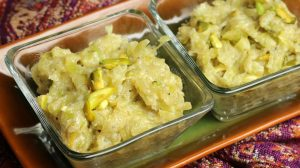

Lauki halwa is a classic dessert that is simple and delicious! Lauki is also known as dodhi, ghia, bottle gourd, or opo squash. Lauki halwa is packed with all the nutrition of lauki and tastes absolutely divine. Just a few ingredients are needed for this dessert: lauki, milk and sugar.

Ingredients
- 2 cups lauki peeled and shredded, before shredding remove the seeds (bottle gourd, doodhi, ghia, opo squash)
- 2-1/2 cups milk
- 2 tablespoons ghee, or clarified butter
- 1/2 cup sugar
- 1/2 teaspoon coarsely ground cardamom seeds
- 2 tablespoons pistachio chopped
Method
- Squeeze the water from shredded lauki after taking out the water lauki should be 2 cups packed. Set aside.
- Boil the milk on medium high heat in heavy bottom pan making sure milk does not burn. After milk comes to boil lower the heat to medium low and boil for ten minutes, until it becomes about 1-1/2 cups. Set aside.
- Melt the ghee in frying pan on medium heat add lauki and sauté for 3 minutes, or until it is tender but not mushy. Add milk mix well and bring it to boil, reduce heat to low and cook until mixture becomes thick. It will take approx. 10 minutes. Stir occasionally in between to prevent sticking.
- Add sugar, cardamom, and half the pistachios. Stir continuously and cook until mixture becomes of consistency of soft sticky dough, this will take approx. 3-4 minutes. Turn of the heat.
- Delicious lauki halwa is ready. Transfer it to serving bowl and garnish with remaining pistachios, and serve hot or at room temperature.